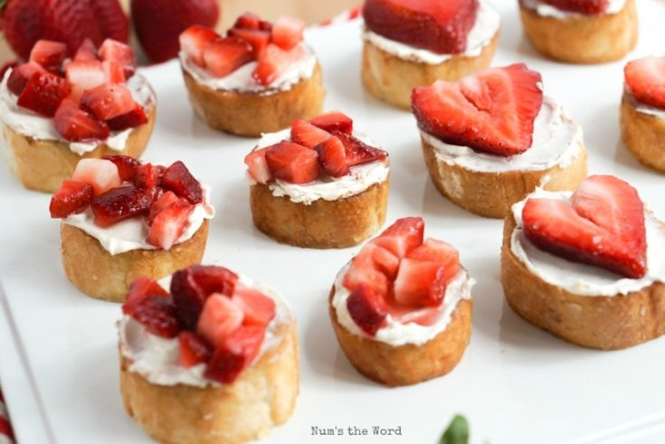

Strawberrie and cream Bruschetta

Introduction
These Strawberries & Cream Bruschetta’s are quick to toss together and perfect for any party! Weddings, baby showers, quick dinner appetizer, it’s great for all the above!
Ingredients
- 1 long French Baguette
- 4 Tablespoons butter
- 4 Tablespoons cinnamon sugar
- 4 ounces (1/2 cup) cream cheese
- 2 cups Strawberries sliced or diced
- 2 Tablespoons powdered sugar
Steps
- Slice baguette into bite size rounds.
- Butter each round then sprinkle with cinnamon sugar.
- Put pan in oven and turn oven on to broil. WATCH CLOSELY as you just want the butter to melt and a hint of golden sides.
- Remove from oven and set aside.
- Mix cream cheese until smooth and creamy.
- Spread over each baguette round.
- In a small bowl combine strawberries and powdered sugar.
- Scoop strawberries on top of baguette rounds and devour!